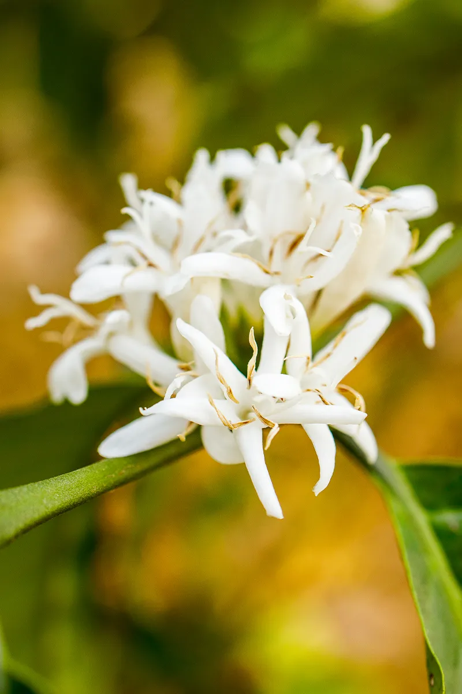
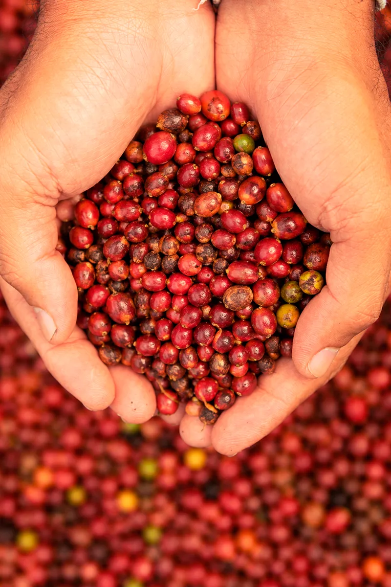
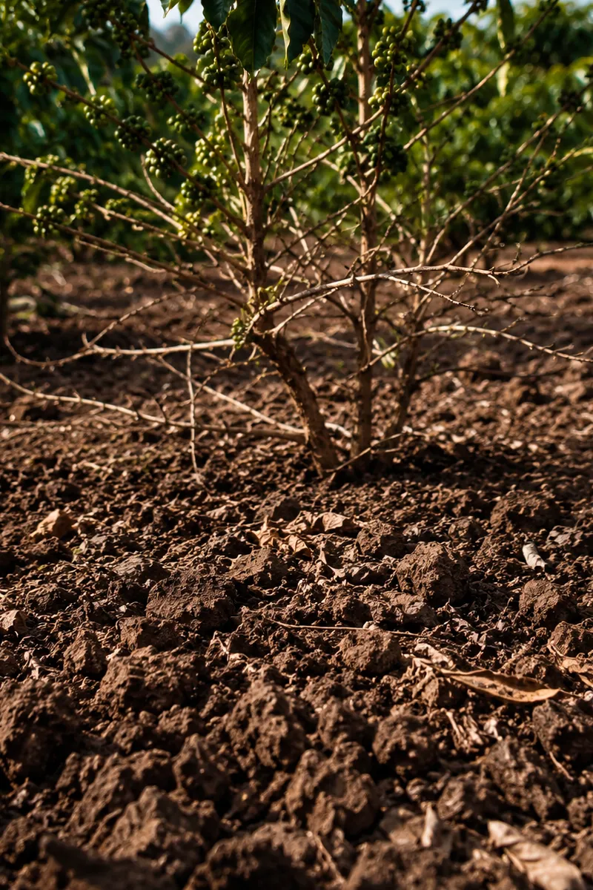
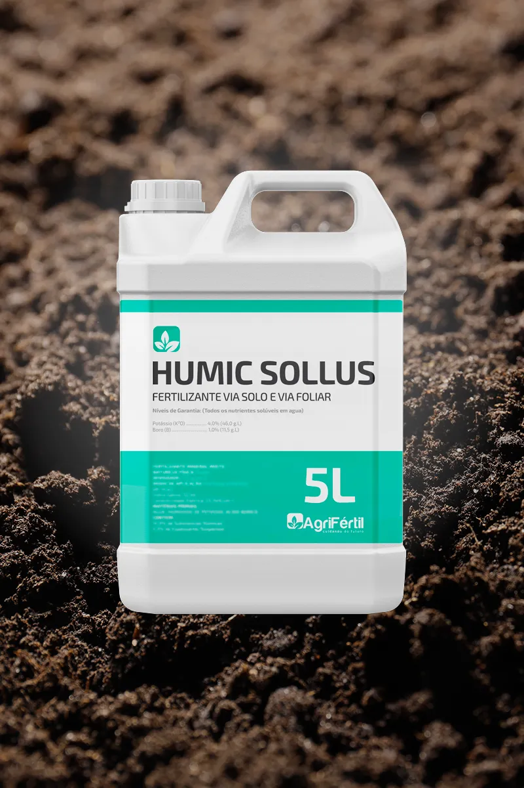
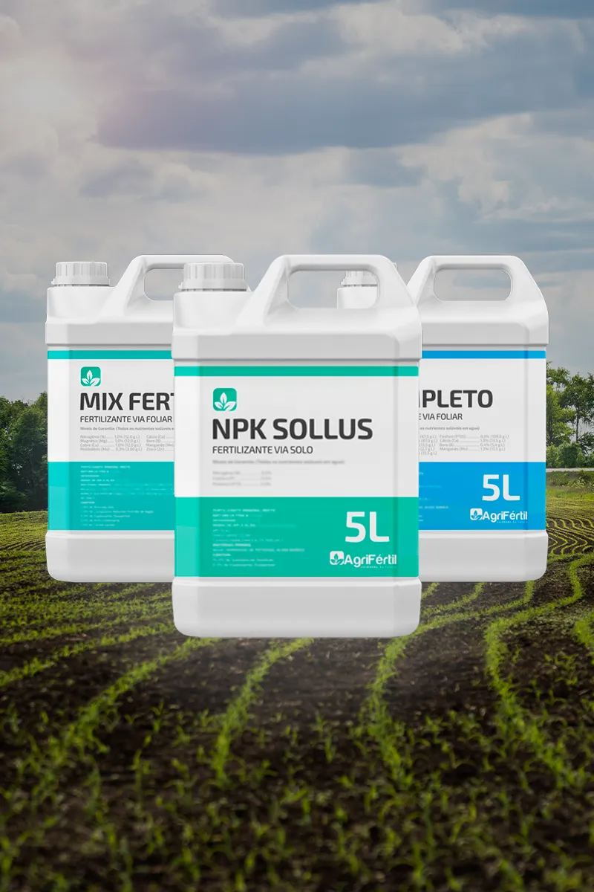
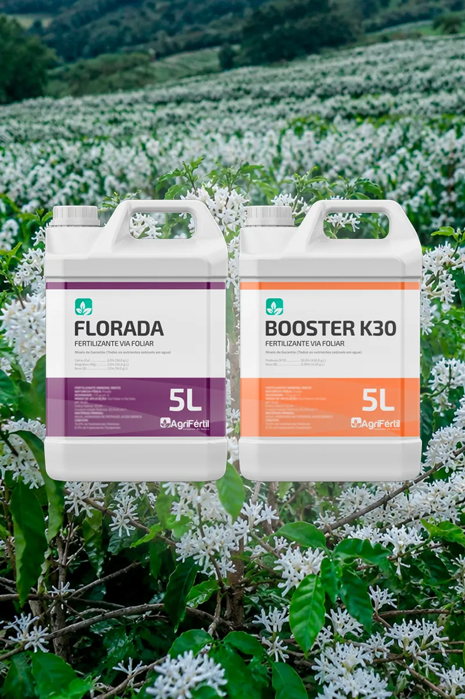
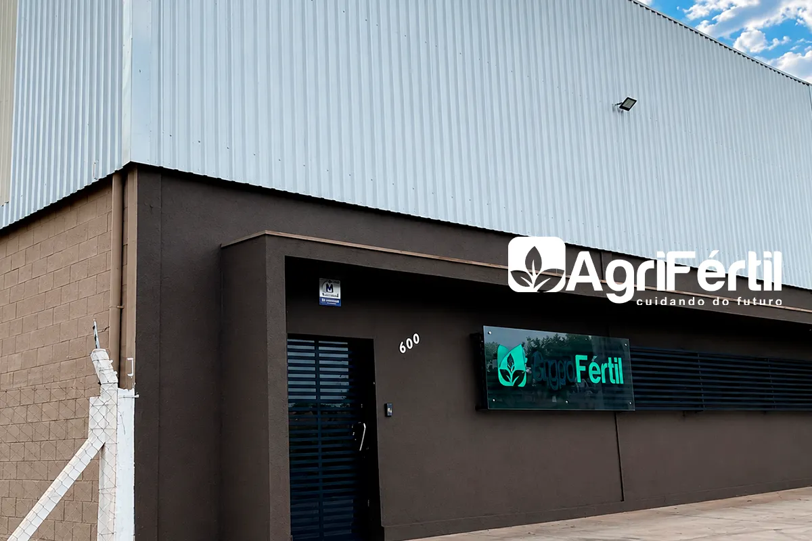

produto-01.pngSe o adubo não chega na planta ou falta energia nos frutos, o investimento vai pelo ralo. O Programa Nutricional AgriFértil reestrutura o solo, estimula o enraizamento e garante grãos pesados de alta classificação comercial.

produto-01.pngAbortamento de Florada
A lavoura floresce bem, mas o estresse térmico ou a falta de micronutrientes específicos fazem a florada "chapar" e cair, reduzindo o potencial de carga logo no início.

produto-02.pngCafé "Chocho" e Peneira Baixa
Frutos miúdos e desuniformes que pesam pouco na balança e jogam o valor da sua saca para baixo na hora da classificação na cooperativa.

produto-03.pngSolo Travado e Baixeiro Desfolhado
A planta não consegue puxar o adubo do chão, entra em esgotamento pós-colheita ("vassoura") e perde a força para a próxima safra.

produto-04.pngFase 1: Preparo e Choque de Raiz (Humic Sollus)
Quando aplicar: Pré-plantio, no preparo do solo ou na manutenção.
À base de Leonardita Australiana pura, ele descompacta o solo, aumenta a retenção de água e ativa a vida biológica, fazendo com que as raízes do café dobrem de tamanho e aproveitem até a última gota de adubo.

produto-05.pngFase 2: Nutrição Base e Manutenção (NPK Sollus 20-05-20 + Completo + Mix Fértil)
Quando aplicar: Via solo e aplicações foliares mensais.
Entrega o equilíbrio perfeito de NPK, micronutrientes e aminoácidos essenciais para manter o cafezal verde, reduzir o estresse pós-colheita e segurar a carga sem esgotar a planta.

produto-06.pngFase 3: O Segredo do Peso e Enchimento (Florada + K30)
Quando aplicar: Na pré e pós-florada e durante o enchimento dos frutos.
O K30 direciona toda a energia e açúcares da planta direto para os frutos. O resultado é um café de peneira alta, grãos pesados, maturação uniforme e excelente rendimento de saca.
Cada talhão e altitude exigem uma dosagem exata. Deixe os seus dados abaixo para que o nosso engenheiro agrônomo especialista em cafeicultura calcule o programa ideal para a sua lavoura, direto da fábrica.
O Humic Sollus é um condicionador de solo à base de Leonardita Australiana pura, aplicado via solo na dosagem de 8 a 10 L/hectare. Ele age aumentando a Capacidade de Troca Catiônica (CTC), descompactando o perfil do solo, retendo umidade na zona radicular e ativando a vida biológica. O resultado é um sistema radicular mais profundo, maior aproveitamento do adubo aplicado e maior resistência do cafezal ao estresse hídrico.
O Booster K30 é um fertilizante foliar de alta concentração de potássio, aplicado na dosagem de 2 a 4 L/hectare durante a fase de enchimento dos frutos. O potássio é o nutriente responsável por direcionar os açúcares e a energia da planta para os grãos, resultando em café de peneira alta, grãos mais pesados, maturação uniforme e melhor rendimento de saca. Aplique após a florada consolidada, repetindo conforme orientação técnica.
O Florada é um fertilizante foliar formulado especificamente para a fase reprodutiva do cafeeiro, com dosagem de 2 a 4 L/hectare. Na pré-florada, ele prepara a planta com os micronutrientes essenciais para que as flores se desenvolvam de forma plena e resistam ao estresse térmico. Na pós-florada, garante a fixação dos frutos e reduz o abortamento, aumentando o número de grãos por ramo e o potencial de carga da safra.
No Programa Nutricional AgriFértil para café, as aplicações foliares dos produtos Completo e Mix Fértil são recomendadas mensalmente, na dosagem de 1 a 2 L/hectare cada, durante todo o ciclo da cultura. Já os produtos de fase (Florada e Booster K30) são aplicados em momentos específicos do calendário de desenvolvimento dos frutos. Nosso agrônomo calcula o calendário exato para a sua região e altitude.
Sim. Os produtos da linha foliar AgriFértil (Completo, Mix Fértil, Florada e Booster K30) foram desenvolvidos para serem compatíveis entre si e com a maioria dos defensivos agrícolas utilizados na cafeicultura. Para otimizar a aplicação e reduzir o número de passadas, recomendamos o uso dos adjuvantes CitroGold, SilFol ou FixFol para melhorar a adesão e a absorção foliar. Consulte nosso técnico para o protocolo de tanque mistura ideal para a sua lavoura.
A adubação convencional entrega nutrientes no solo, mas não garante que a planta consiga absorvê-los. O Programa AgriFértil atua em todas as frentes: o Humic Sollus reestrutura o solo e libera os nutrientes presos; o NPK Sollus 20-05-20 entrega o equilíbrio nutricional base; os foliares mensais corrigem deficiências e reduzem o estresse; e os produtos de fase (Florada e Booster K30) direcionam energia para a produção. É uma nutrição integrada, da raiz ao grão, pensada para maximizar sacas por hectare e a classificação comercial do café.
Com sede em São José do Rio Preto – SP, a AgriFértil é uma indústria focada em desenvolver linhas completas de fertilizantes de alta eficiência e defensivos biológicos de ponta, acompanhando o produtor do plantio à colheita. Através do manejo biológico inteligente, entregamos soluções sustentáveis que quebram a resistência de pragas e garantem produtividade máxima para quem move a economia do país.
Conhecer nosso catálogo completo
agrifertil.png